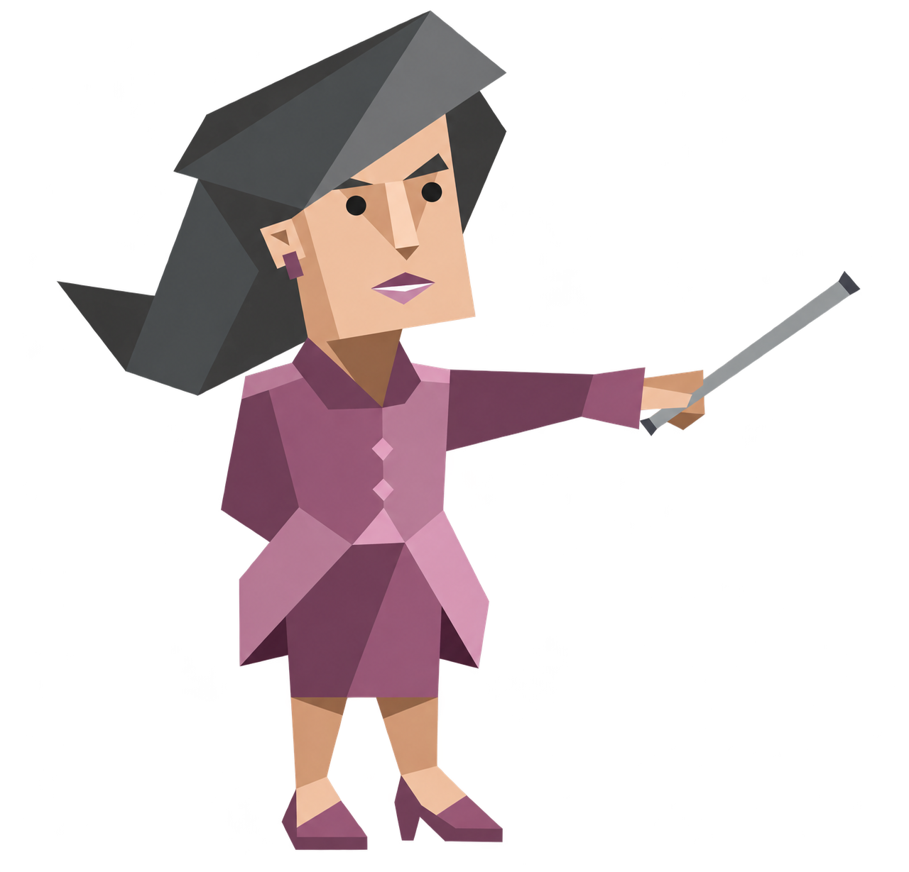
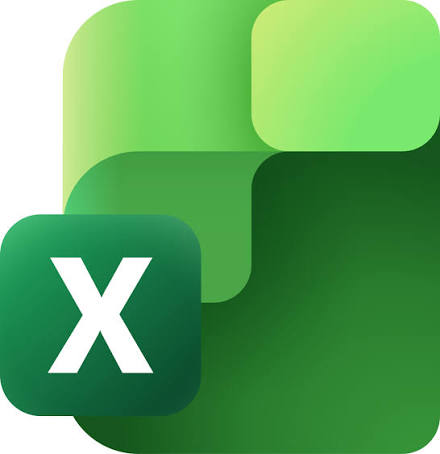
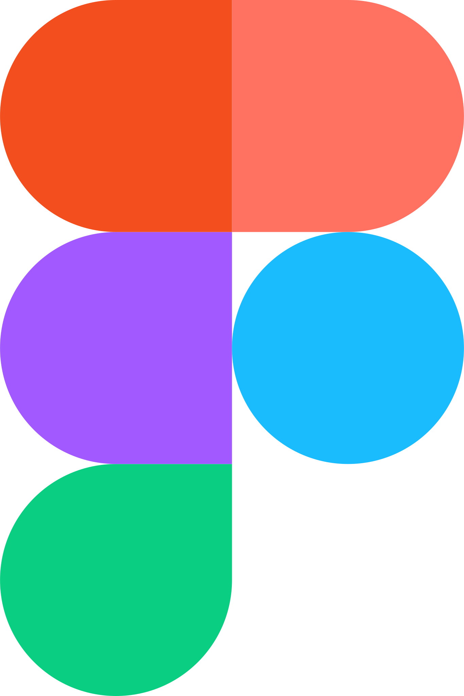

01

Planning
자료조사와 분석을 바탕으로 아이디어를 기획안으로 발전
SPORTS × TECHNOLOGY
안녕하세요
“끊임없는 도전과 실행으로, 스포츠와 기술의 경계를 넘어 새로운 가능성을 개척하는 사람”

자료조사와 분석을 바탕으로 아이디어를 기획안으로 발전
일정, 인력, 역할, 현장 운영을 체계적으로 관리
팀원, 참여자, 기관과 소통하며 협업 구조 형성
PPT, 보고서, 웹사이트 등 결과 도출
01 / ABOUT ME

ENTJ
목표를 명확히 세우고 실행을 이끄는 유형으로, 전략적 사고와 결단력, 팀을 조율하는 리더십이 강점입니다.
02 / EXPERIENCE
기획부터 운영, 결과 정리까지 프로젝트 전 과정을 경험한 실행형 인재
03 / LEARNING
스포츠&테크놀로지
2024.03. ~ 재학
스포츠의학, 운동생리학, 운동역학 및 AI 응용 행동분석 과정을 이수했습니다. 디지털 웨이트 트레이닝 장비의 운동 효과성을 검증하는 산학협력 연구에서 학생연구원 팀장을 맡아 프로젝트 운영을 주도했습니다. 또한 IMU 센서로 케틀벨 스윙의 운동 데이터를 수집·분석하고, 실시간 움직임 추적 기술을 2D 포격 게임에 연동한 인터랙티브 프로토타입을 개발했습니다. 스포츠의학에 대한 전문성과 기술적 사고를 바탕으로 스포츠와 기술의 융합을 통해 새로운 가치를 창출하는 데 관심이 많습니다.
LEARNING ARCHIVE
운동생리학
심장의 구조와 체순환·폐순환, 심박출량 및 혈액의 역할을 도식화하며 운동 중 심혈관 반응을 학습했습니다.
04 / SELECTED WORK
문제를 발견하고, 기획하고, 현장에서 실행한 기록입니다.

모터 기반 디지털 웨이트 트레이닝 장비 ‘MOTY V’의 속도 기반 저항 운동 기능을 활용하여 예비 시니어를 대상으로 전통적인 근력 운동과 어떤 차이를 보이는지 중재 효과를 분석할 필요가 있었습니다.
학생 연구원 팀장으로서 연구원, 피험자, 박사 연구진 사이의 소통을 조율하며 다양한 이해관계자를 연결하는 커뮤니케이션 역량과 현장 운영 능력을 키웠습니다. 일정·인력·피험자를 관리하고 연구원을 교육하는 과정에서 명확한 기준 수립과 역할 조정 능력, 예상하지 못한 상황에서는 변수 통제와 즉각적인 대응 역량이 중요하다는 점을 배웠습니다. 또한 연구 결과를 포스터로 구조화하며 복잡한 연구 내용을 핵심 메시지로 정리하고 전달하는 역량을 발전시켰습니다.

기존 피트니스 게임은 전용 컨트롤러나 정해진 동작을 활용해 운동과 게임을 결합하고 있습니다. 이에 실제 근력 운동 기구인 케틀벨의 스윙 동작을 센서로 인식하고, 운동 수행이 게임 조작과 전투로 직접 연결되는 새로운 체감형 게임을 기획했습니다.
IMU 센서와 Arduino, 코딩을 활용해 아이디어를 게임으로 구현하며 아이디어를 기술적 결과물로 구체화하는 실행력을 키웠습니다. 특히 센서 데이터를 게임에 활용할 수 있는 입력값으로 변환하고 문제해결을 위한 재 캘리브레이션 알고리즘을 설계하여 센서 데이터 처리 능력과 기술적 문제해결 역량을 높였습니다. 사람의 움직임이 게임에 이질감 없이 반영되도록 반복적으로 조정하며 기술과 사용자 경험을 연결하는 시스템 설계 역량도 익혔습니다.

전국기능경기대회는 다양한 직종의 기능 인재가 참가하는 대규모 국가 기능경기 행사로, 여러 경기장과 참가자·관계자가 동시에 운영되는 만큼 정확한 사전 준비와 현장 대응 체계가 중요했습니다. 행사가 원활하게 진행될 수 있도록 사전 제작물과 운영 요소를 점검하고, 현장에서는 참가자 및 관계자의 이동·안내·문의 대응 등 행사 운영을 지원했습니다.
전국 단위 대규모 행사의 기획부터 사전 준비, 현장 운영, 결과 보고까지 전 과정을 경험하며 MICE 산업은 기획안을 실제 현장에서 실행될 수 있도록 구체화하는 과정이 중요하다는 점을 배웠습니다. 일정·공간·콘텐츠를 기획하고 배너·안내물·비품 제작과 부스 발주까지 진행하면서 작은 준비 요소 하나가 현장 운영의 효율성과 참가자 경험에 직접 영향을 준다는 것을 체감했습니다. 또한 여러 경기장에서 동시에 진행되는 행사에서 자원봉사자와 운영 인력을 배치하고 현장 상황을 지속적으로 확인하며, 사전에 계획한 내용을 기준으로 움직이되 돌발 상황에는 빠르게 우선순위를 판단하고 대응하는 현장 운영 역량을 키웠습니다.

속도 기반 저항 운동과 전통적 1RM 비율 기반 저항 운동 간 운동 수행 및 생리적 반응 차이를 검증하고자 하였습니다. 성인 남성 15명에게 무작위 교차 설계를 적용하여 백스쿼트·데드리프트를 실시하고, 운동 수행 능력과 젖산·CK·LDH 변화를 비교했습니다.
무작위 교차설계 연구를 수행하며 정확한 비교를 위해 실험 조건과 측정 시점을 통제하는 중요성을 배웠습니다. 운동수행 지표와 젖산·CK·LDH를 함께 분석하는 과정에서 단일 결과가 아닌 수행능력과 생리적 부담을 종합적으로 해석하는 연구적 사고를 익혔으며, 통계 결과를 실제 운동처방과 현장 적용 가능성으로 연결하는 역량을 키웠습니다.

대학생의 음주 문제는 자신의 실제 음주량과 위험 수준을 제때 인식하지 못한다는 데 있습니다. 술자리에서는 대화와 권유, 분위기 등의 변인으로 섭취량을 정확히 기억하기 어렵고, 적정 수준을 넘긴 뒤에야 과음을 인식하는 경우가 많습니다. 이에 음주량을 자동으로 측정하고 현재 상태를 직관적으로 안내하여 사용자의 절주와 자기 관리를 돕는 앱·기기 연동 서비스를 기획했습니다.
Stanford D.School의 단계를 수행하며 사용자 경험에서 문제를 발견하고 정의하는 역량을 키웠습니다. 개인적인 과음 경험을 다른 사용자의 불편과 연결하고, 기기 목업과 앱 프로토타입을 반복적으로 수정하면서 공감 기반 문제 해결 능력과 프로토타이핑을 통한 개선 역량을 익혔습니다. 또한 수집 데이터를 서비스 기능과 UX/UI에 연결하며 디바이스·데이터·사용자 경험을 통합적으로 설계하는 서비스 기획 역량을 발전시켰습니다.

65세 이상 고령자는 노쇠 위험 수준에 따라 신체 기능과 운동 수행 능력의 차이가 크기 때문에 동일한 운동을 일괄 적용하기 어렵습니다. 이에 33명의 참여자를 건강군·저위험군·고위험군으로 구분하고, 각 집단의 기능 수준에 맞는 운동을 적용하는 ‘노쇠 예방을 위한 맞춤형 운동&건강 관리 프로그램’을 운영했습니다.
신체기능 평가를 기반으로 대상자를 군집화하고 맞춤형 운동을 적용하며, 측정 결과가 운동처방의 출발점이라는 점을 배웠습니다. 다양한 신체 상태의 노인을 직접 지도하면서 개인별 기능 수준에 따라 운동 강도와 방법을 조정하는 현장 대응력을 키웠으며, 사전·사후 재평가를 통해 평가–운동처방–중재–재평가가 연결되는 근거 기반 운동 지도 과정을 경험했습니다.

AI·디지털 기술을 활용한 과학교육 역량 강화를 위해 초·중·고 교원을 대상으로 3일간 직무 연수를 운영하는 프로젝트였습니다. 학교급별로 서로 다른 강의실과 교육과정이 동시에 운영되는 만큼, 참가자 등록부터 좌석 배치, 강의 기자재, 식음료, 안내 제작물까지 다수의 운영 요소를 사전에 체계적으로 준비하고 각 교육장의 진행 상황을 실시간으로 관리하여 연수생이 교육 자체에 집중할 수 있는 운영 환경 구축을 지원했습니다.
다중 교육과정을 운영하며 공간·제작물·기자재·식음료 등 복잡한 운영 요소를 체크리스트로 표준화하고 관리하는 역량을 키웠습니다. 또한 참가자 동선을 고려해 개강식–식사–연수가 자연스럽게 이어지도록 구성하면서 참가자 경험 중심의 운영 기획을 익혔고, 만족도 조사와 결과 보고서를 통해 현장 운영 결과를 분석하고 다음 개선점으로 연결하는 사후평가의 중요성을 배웠습니다.
해당 유형의 프로젝트가 없습니다.
05 / QUALIFICATIONS
축구의 기초 기술과 경기 이해를 바탕으로 생활체육 참여자를 지도하는 스포츠지도 자격입니다.
노인의 신체 특성과 운동 수행능력을 고려해 보디빌딩 종목의 운동을 지도하는 스포츠지도 자격입니다.
스포츠 조직·시설·행사의 운영과 마케팅 등 스포츠산업 경영에 관한 지식을 다루는 자격입니다.
운동 상황에서 근육과 관절을 지지하기 위한 스포츠테이핑 방법을 다루는 자격입니다.
축구 경기 규칙을 이해하고 경기 상황에 적용하는 심판 활동의 기초 자격입니다.
풋살 경기 규칙을 바탕으로 경기 운영과 판정에 필요한 지식을 다루는 심판 자격입니다.
신체 기능과 운동 수행능력을 고려한 스포츠재활 운동 프로그램의 구성·지도 지식을 다루는 자격입니다.
AWARDS & LEARNING
06 / TOOLS & CAPABILITIES

수준
수준

수준
수준
수준

수준
수준

수준
수준

수준

수준
해당 유형의 스킬이 없습니다.
더 궁금하신가요?
원하는 프로필을 선택해보세요. 해당 프로필로 연결됩니다.